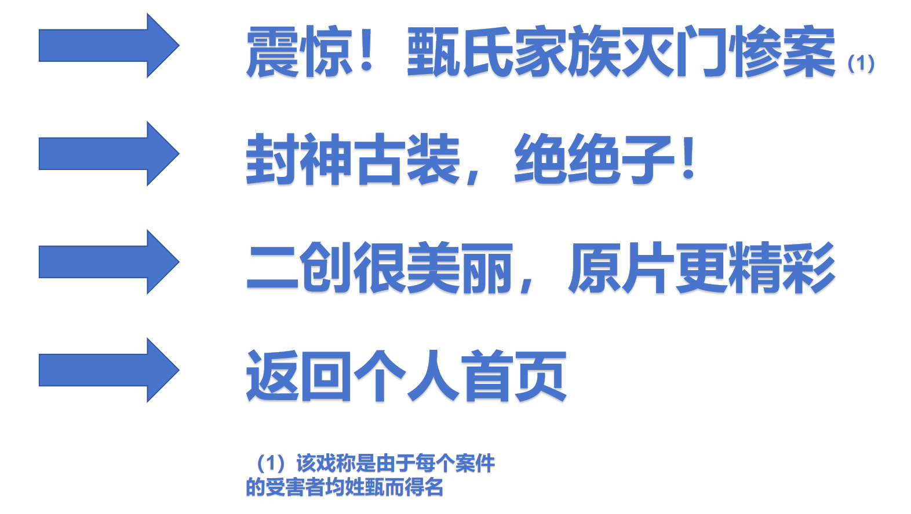

| 明星大侦探/大侦探到现在已经九季了，每年寒假左右出一季，即将迎来十周年生日，在此先表示祝贺。虽然我不是这档节目的接生粉，而是在第三季入坑，它也已经陪伴我快7年了。从我小学到我大学一路相伴，提供给我许许多多的情绪价值，所以我对这档综艺有着更不一样的感情，希望这档节目能一路长青，跨越万水千山，“侦”心不改。 | |
| 同时，我喜爱的不仅仅是节目本身，节目所邀请的嘉宾也让我倍生好感。十年走来，许多侦探都像是这档节目的家人一样，紧密联系，每位侦探都留下了自己的故事，有太多太多，无法用几张图片和言语来记录，不论是九季以来常驻的定海神针何老师，还是遗憾离去的撒撒，或是直觉女神鸥姐，抑或是古灵精怪的鬼鬼，都留下了自己的精彩。期待各位侦探在未来的精彩表现。期待大侦探第十季的如约而至。 | |
|  | |